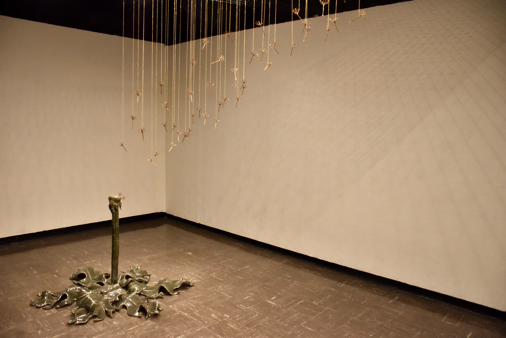
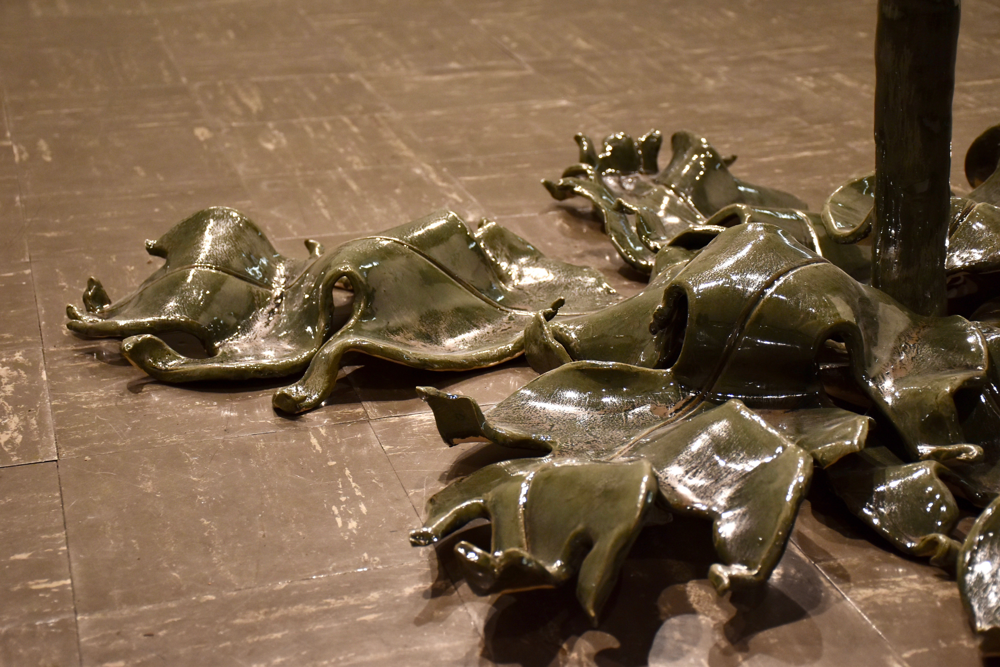
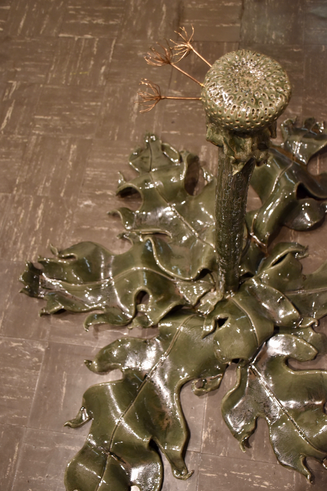
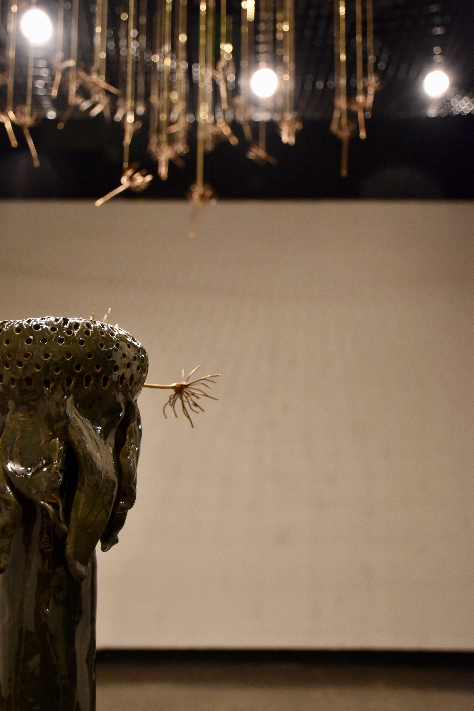

The Stuff of Fairy Tales

The Stuff of Fairytales Gallery Exhibition
There’s a Whole Lot of Beauty in Ordinary Things,
but isn’t that the Point of It?
~The Office
An ordinary dandelion,
Meek and defenseless; hardy and resilient,
Something lovely, wistful, and ethereal.
In full bloom,
Plucked and made the object of our longing.
Seeds from their flower, the scattered departure,
Carries our lighter-than-air wishes to an unknown force.
A wish, a longing,
An optimistic hope, a future blessing,
Wrapped in the lowly Dandelion,
Reaching for a mysterious unknown helper.
Previous



